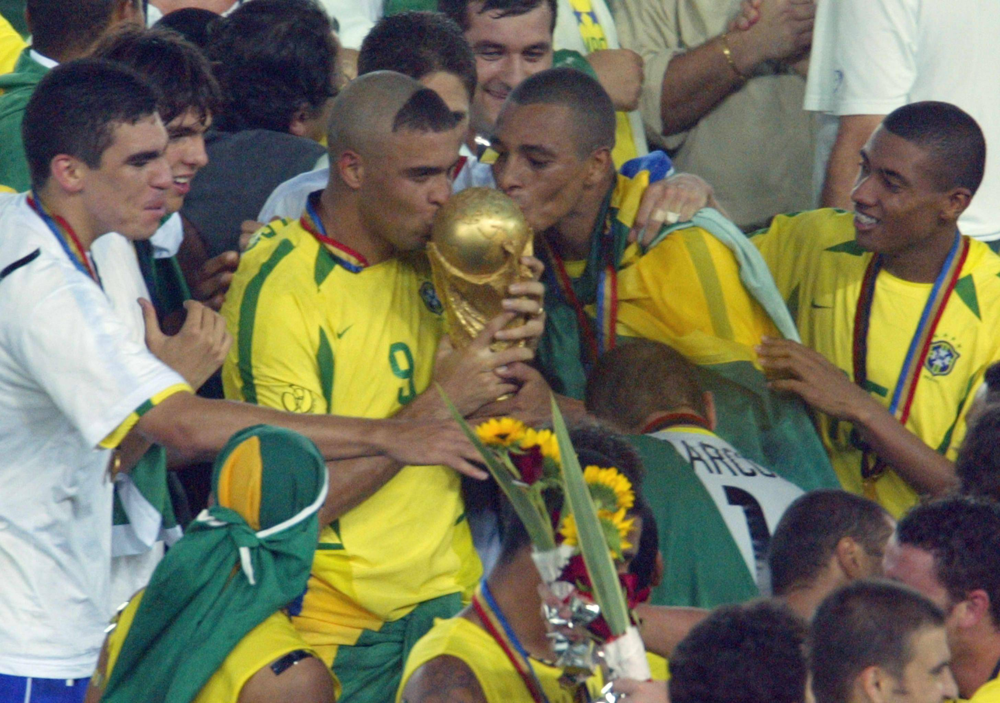
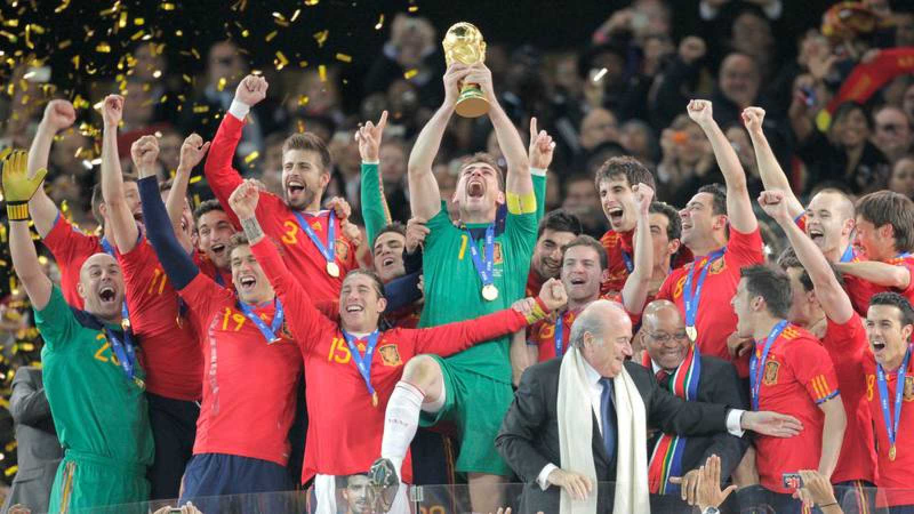
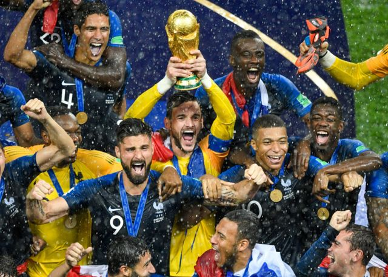
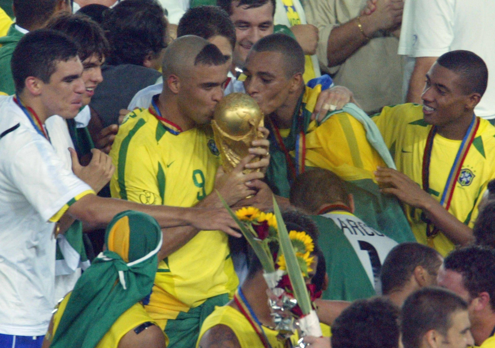
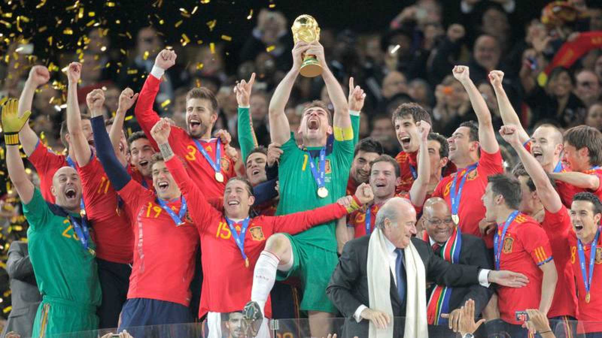
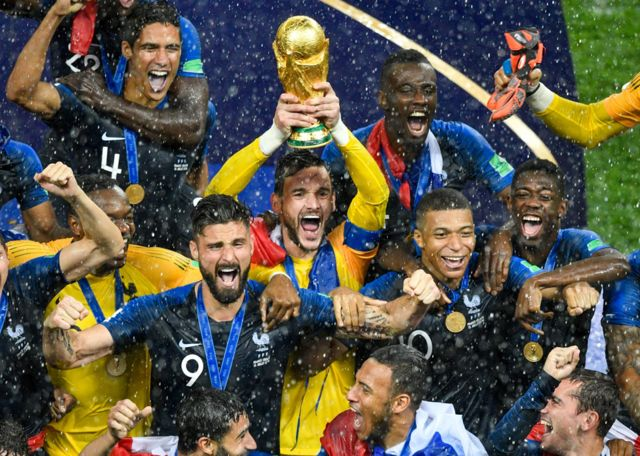

Mundiales


La Francia de Zinedine Zidane se convertiría en campeón del mundo por
primera vez en su historia tras bordar el torneo,
en el que además actuaban de local al ser sede.
En la final, disputada en el Stade de France, Les Bleus arrollaron a Brasil (3-0).
El primer Mundial disputado en suelo asiático dejó campeón a Brasil,
nuevamente venciendo a Alemania (2-0) el combinado que mas finales ha disputado en la historia de los Mundiales.
Ronaldo, que fue triste protagonista en la final de 1998, se desquitaría con un doblete que valdría para que la
Canarinha se convirtiera en pentacampeona en el estadio de Yokohama.
Sudáfrica viviría el fútbol total de la Selección Española,
que se se proclamaría campeona del mundo por primera vez en su historia tras arrasar con su 'tiki-taka'.
Con un juego de toque que encandiló al mundo entero, La Roja se impuso en la prórroga de la final,
disputada en el Soccer City de Johannesburgo, a Holanda con un gol de Andrés Iniesta que ya es historia del deporte.
Francia logró su segundo título del mundo al vencer 4-2 en la final a Croacia.
El trabajo de los galos se sustentó de punta a punta: desde Hugo Lloris hasta Kilyan Mbappé,
pasando por Ngolo Kanté, Paul Pogba o Antoine Griezmann. Veinte años después de ganar y organizar la cita de 1998,
Les Bleus volvieron a festejar.
El torneo qatarí fue la última edición donde 32 selecciones disputen la fase final.
Después de que Giani Infantino, presidente de la FIFA, dejara entrever la posibilidad de que el 2022
fuese el conejillo de indias para el Mundial de 48, el órgano rector confirmó que ya no será así y se
mantendrán las 32 plazas.
 




